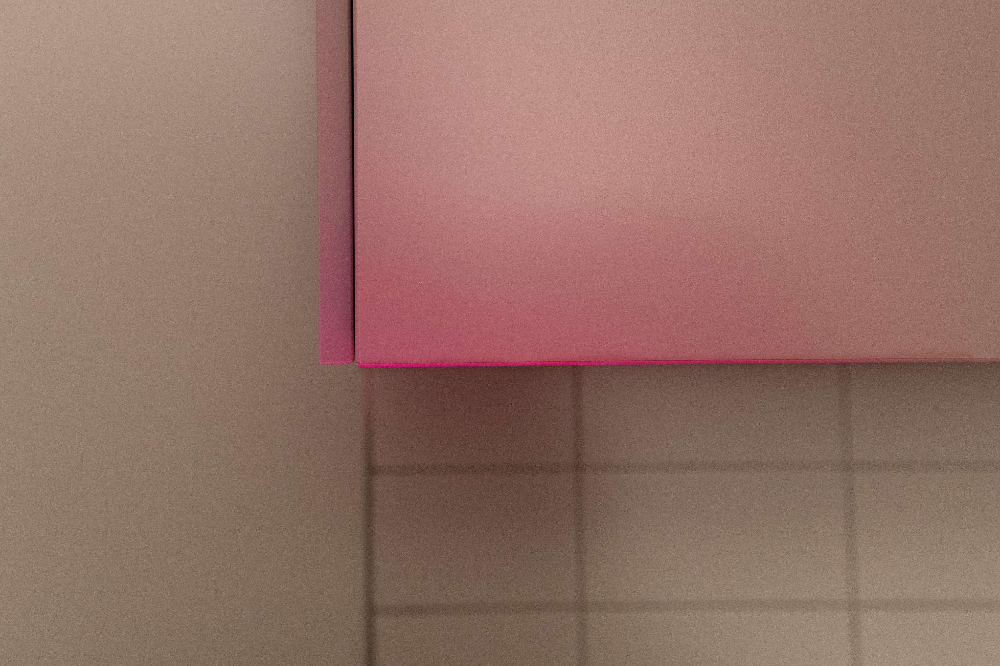

Photography / Color Study / 2024
Chromatic Surface Studies
A photography series using colored light, domestic corners, and repeated framing to trace subtle spatial outlines through color and surface.

About the Series
Chromatic Surface Studies focuses on everyday interior corners transformed through colored lighting, close observation, and repeated photographic framing.
By photographing similar domestic surfaces from slightly different angles, the series uses light, shadow, and color to outline subtle spatial forms. Each image becomes both a small color field and a record of a familiar space becoming abstract.
Tools: Digital camera, Lightroom Classic, Adobe Photoshop
Image Series


